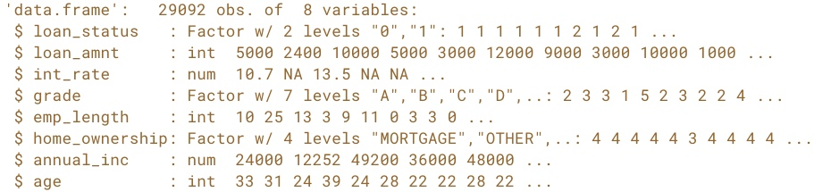
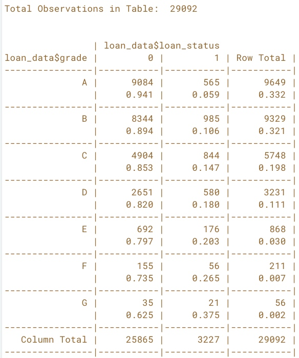
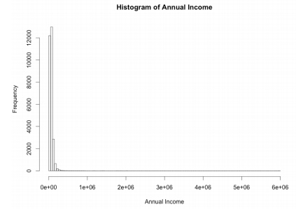
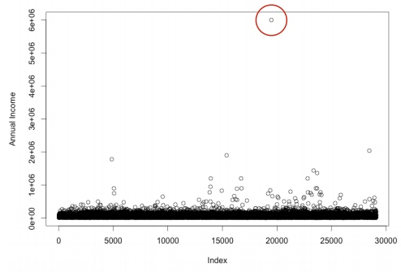
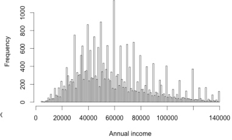
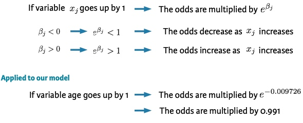

Introduction and EDA
Components of expected loss (EL) - Probability of default (PD) - Exposure at default (EAD): the amount of the loan that still needs to be repaid at the time of default - Loss given default (LGD): the amount of loss if there is a default (express as a percentage of EAD)
EL = PD * EAD * LGD
Information used by banks: - Application information: demo... - Behavioral information: - current account balance - payment arrears in account history
Example:
str(loan_data)

Cross Table
# Load the gmodels package
library(gmodels)
# Call CrossTable() on loan_status
CrossTable(loan_data$loan_status)
# Call CrossTable() on grade and loan_status
CrossTable(x=loan_data$grade, y=loan_data$loan_status, prop.r=TRUE, prop.c=FALSE, prop.t=FALSE, prop.chisq=FALSE)

Histograms and outliers
Plot histogram of the annual income
hist_income<- hist(loan_date$annual_inc, xlab = "Annual Income", main = "Histogram of Annual Income")
# Check the break of the annual income
hist_income$breaks
# Set the n_breaks
n_breaks<- sqrt(nrow(loan_data))
hist_income_n<- hist(loan_date$annual_inc, breaks=n_breaks, xlab = "Annual Income", main = "Histogram of Annual Income")

Plot to see the outlier of annual income
plot(loan_date$annual_inc, ylab = "Annual Income")
 Outlier: - expert judgement - rule of thumb: Q1 - 1.5 * IQR -- Q3 + 1.5 * IQR - mostly: combination of both
# expert judgement: annual > 3m
index_outlier_expert<- which(loan_date$annual_inc > 3000000
loan_data_expert<- loan_date[-index_outlier_expert,]
# rule of thumb: bigger than Q3 + 1.5 *IQR
outlier_cutoff<- quantile(loan_date$annual_inc, 0.75) + 1.5 * IQR(loan_data$annual_inc)
index_outlier_ROT<- which(loan_data$annual_inc > outlier_cutoff)
loan_data_ROT<- loan_data[=index_outlier_ROT,]
# plot histograms
hist(loan_data_ROT$annual_inc, sqrt(nrow(loan_data_ROT)), xlab = "Annual income rule of thumb")

Missing data and coarse classification
Strategies: - Delete row/column - Replace - Keep All the method can be applied to outliers too.
Delete row or delete column:
# Look at summary of loan_data
summary(loan_data$int_rate)
# Get indices of missing interest rates: na_index
na_index <- which(is.na(loan_data$int_rate))
# Remove observations with missing interest rates: loan_data_delrow_na
loan_data_delrow_na <- loan_data[-na_index, ]
# Make copy of loan_data
loan_data_delcol_na <- loan_data
# Delete interest rate column from loan_data_delcol_na
loan_data_delcol_na$int_rate<- NULL
Replace missing data
# Compute the median of int_rate
median_ir<- median(loan_data$int_rate, na.rm = TRUE)
# Make copy of loan_data
loan_data_replace <- loan_data
# Replace missing interest rates with median
loan_data_replace$int_rate[na_index] <- median_ir
# Check if the NAs are gone
summary(loan_data_replace$int_rate)
Keep missing data - coarse classification (continuous variable)
# Make the necessary replacements in the coarse classification example below
loan_data$ir_cat <- rep(NA, length(loan_data$int_rate))
loan_data$ir_cat[which(loan_data$int_rate <= 8)] <- "0-8"
loan_data$ir_cat[which(loan_data$int_rate > 8 & loan_data$int_rate <= 11)] <- "8-11"
loan_data$ir_cat[which(loan_data$int_rate > 11 & loan_data$int_rate <= 13.5)] <- "11-13.5"
loan_data$ir_cat[which(loan_data$int_rate > 13.5)] <- "13.5+"
loan_data$ir_cat[which(is.na(loan_data$int_rate))] <- "Missing"
loan_data$ir_cat <- as.factor(loan_data$ir_cat)
# Look at your new variable using plot()
plot(loan_data$ir_cat)
Data splitting and confusion matrices
Split the data to training and testing set
# Set seed of 567
set.seed(567)
# Store row numbers for training set: index_train
index_train<- sample(1:nrow(loan_data), 2/3*nrow(loan_data))
# Create training set: training_set
training_set <- loan_data[index_train, ]
# Create test set: test_set
test_set <- loan_data[-index_train,]
Classification accuracy = (TP + TN) / (TP+FP+TN+FN) Sensitivity: True Positive Rate Specificity: True Negative Rate
# Create confusion matrix
conf_matrix<- table(test_set$loan_status, model_pred)
# Compute classification accuracy
accuracy<- (conf_matrix[1,1] + conf_matrix[2,2]) / length(model_pred)
# Compute sensitivity
sensitivity<- conf_matrix[2,2] / (conf_matrix[2,1] + conf_matrix[2,2])
Logistic Regression
Interpretation of coefficient
 If variable age goes up by 1, the odds ratio of p(default)/(1- p(default)) are multiplied by a number less than 1.
# Build a glm model with variable ir_cat (interest rate) as a predictor
log_model_cat<- glm(loan_status ~ ir_cat, family = "binomial", data = training_set)
# Print the parameter estimates
log_model_cat
The coefficient for interest_category 8-11 is 0.5414. Compared to the reference category with interest rates between 0% - 8%, the odds in favor of default change by a multiple of 1.718 (exp(0.5414))
Prediction
log_model_full <- glm(loan_status ~ ., family = "binomial", data = training_set)
*predictions_all_full <- predict(log_model_full, newdata = test_set, type = "response")
# Look at the range of the prediction
range(predictions_all_full)
Evaluation
# Make a binary predictions-vector using a cut-off of 15%
pred_cutoff_15<- ifelse(predictions_all_full > 0.15, 1, 0)
# Construct a confusion matrix
table(test_set$loan_status, pred_cutoff_15)
Decision tree
Deal with unbalanced data 1. Undersampling or oversampling (Only the training set) 2. Changing the prior probabilities 3. Including a loss matrix (increasing the misclassification cost of default)
Undersample
undersampled_training_set: 1/3 of the training set consists of defaults, and 2/3 of non-defaults
library(rpart)
tree_undersample <- rpart(loan_status ~ ., method = "class",
data = undersampled_training_set,
control = rpart.control(cp = 0.001))
plot(tree_undersample, uniform = TRUE)
text(tree_undersample)
Changing the prior probabilities
Including a loss matrix
tree_loss_matrix <- rpart(loan_status ~ ., method = "class",
data = training_set,
parms = list(loss = matrix(c(0, 10, 1, 0), ncol=2)),
control = rpart.control(cp = 0.001))
# Plot the decision tree
plot(tree_loss_matrix, uniform=TRUE)
# Add labels to the decision tree
text(tree_loss_matrix)